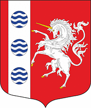

Интерактивная карта достопримечательностей исторического района Шувалово-Озерки
Зеленым цветом выделены сохранившиеся достопримечательности, серым - достопримечательности, которых больше не существует
Открыть на полный экран